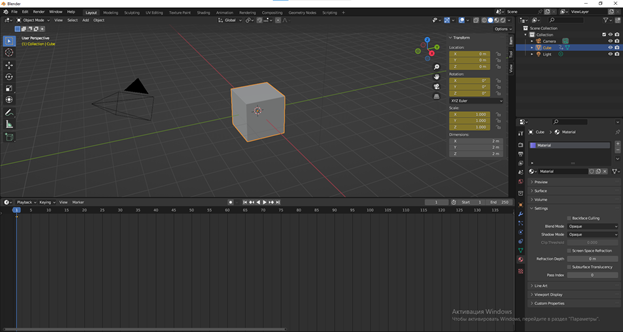
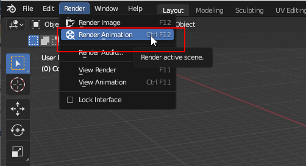

В Blender существует несколько способов анимации. Самый очевидный — анимация при помощи ключевых кадров или кейфреймов (Keyframe). В нижнем окне программы по умолчанию открыт таймлайн — временная линия, на которой можно фиксировать различные параметры объектов в виде ключевых кадров.
Открываем блендер. Создаем новый файл. Добавляем на сцену куб.
На timeline перемещаемся на 1 кадр.
Нажимаем на клавиатуре на клавишу «I», высвечивается контекстное меню и выбираем ключ «location, Rotation & Scale» (Перемещение, поворот и масштабирование).
После этого у нас в 1 кадре появится ключ на timeline.

Затем переместимся в 60 кадр, сдвинем наш куб по оси Х на -10, повернем его по оси У на -60 градусов и изменим масштаб увеличив в 1,5 раза. После этого поставим ключ аналогично. Нажимаем на клавиатуре на клавишу «I», высвечивается контекстное меню и выбираем ключ «location, Rotation & Scale» (Перемещение, поворот и масштабирование). На 60 кадре появился ключ.
Воспроизведем анимацию и увидим, как у нас появилась анимация движения, вращения и изменения масштаба у куба.
Также можно анимировать и ставить ключевые кадры функциям. Добавим изменение цвета нашему кубу.
Для этого выберем куб, перейдем во вкладку Material – Viewport Displlay.
Подводим курсор на цвет и ставим ключ при помощи клавиши «I» в 1 кадре.
Затем переместимся на 30 кадр, изменим цвет, например, на зеленый
Аналогичным образом поставим ключ при помощи клавищи «I» в 30 кадре.
Используя полученные навыки добавим еще одно перемещение, вращение и изменения масштаба для нашего куба в 110 кадр, также изменим цвет.
Повторим аналогичные действия в 180 кадре.
Вернем куб в исходное состояние в 240 кадре и аналогично поставим ключи.
Сохраним полученную анимацию.
Подготовим полученную анимацию для рендера.
Задайте свои настройки производительности. Для рендеринга используется
основная мощность вашего процессора на время, необходимое для создания
анимации. С настройками по умолчанию вы не сможете использовать свой
компьютер для других целей во время рендеринга анимации. При желании вы
можете попросить Blender использовать меньше мощности процессора:
· Разверните заголовок Performance на панели Свойств рендеринга.
· Если для параметра "Режим потоков" выбрано "Автоматическое определение", Blender автоматически определит ваши процессоры и покажет, сколько потоков будет использовано. По умолчанию это максимальное количество, что гарантирует, что анимация будет отображаться быстрее всего, оставляя вам мало энергии для выполнения многого другого.
· Если вы хотите продолжать использовать ваш компьютер в процессе перевода, выберите фиксируется как нити режиме, и вводить меньшее количество потоков. Например, если автоопределение обнаружило 8 потоков, уменьшение их количества до 6 позволит вам по-прежнему выполнять работу во время рендеринга.
Щелкните панель свойств вывода. Это вкладка панели со значком принтера чуть ниже вкладки свойств рендеринга.
Установите свое разрешение. Разрешение, с которым будет отображаться ваша анимация, отображается в значениях X и Y вверху панели. Если вы хотите увеличить или уменьшить разрешение, вы можете указать новые значения здесь.
· Чтобы увеличить или уменьшить в процентах, щелкните значение в процентах по умолчанию (100%) и измените его на другое значение. Большинству людей должно хватить 100%.
Установите рамки для анимации. Значения
"Начало кадра" и "Остановка кадра" должны соответствовать
количеству кадров в вашей анимации (проверьте Начальные и конечные значения под
нижним правым углом вашей анимации). При необходимости вы можете
отредактировать номера начального и конечного кадров, чтобы удалить кадры из
начала или конца анимации.
Установите частоту кадров. По умолчанию частота кадров равна 24 кадрам в секунду. Если вы собираетесь импортировать анимацию в другую программу и вам нужно использовать определенную частоту кадров, вы можете настроить это значение по мере необходимости.
Задайте выходной каталог. В разделе вывода в нижней части панели вы можете выбрать папку, в которую будете сохранять выходные файлы. Вам потребуется создать новый каталог:
· Щелкните значок двух папок, чтобы выбрать каталог, в который вы хотите сохранить файлы.
· Выберите каталог, в котором вы хотите создать свой выходной каталог.
· Нажмите кнопку с папкой и знаком плюс на ней, чтобы создать новый каталог.
· Введите имя каталога, например "Рендеринг" или "Анимация".
· Выберите новый каталог и нажмите Принять. Новое название каталога появится в качестве выходного каталога.
Выберите формат вывода. Для рендеринга выходных данных есть два варианта:
· В виде изображений: Выходной формат по умолчанию - PNG. Если вы сохраните значение по умолчанию или выберете другой формат в разделе "Изображение", Blender сначала отобразит анимацию в виде отдельных изображений, которые затем можно быстро преобразовать в видео с помощью редактора видеоряда. Blender рекомендует этот вариант для рендеринга анимации.
· Если вам придется остановить процесс рендеринга или ваш компьютер отключится во время рендеринга, вы не потеряете свой прогресс, потому что создаете отдельные файлы изображений. Вы также сможете редактировать любое изображение по отдельности перед обработкой в фильм.
· Если у вас прозрачный фон, выберите RGBA в качестве значения "Цвет". В противном случае вы можете использовать "RBG" для файла меньшего размера.
· В виде видео: Если вы выберете один из форматов "Movie", Blender немедленно отобразит анимацию в соответствии с выбранным типом видео. Иногда это лучший выбор для анимации гораздо меньшего размера или с более низким разрешением, но вы рискуете перезапустить рендеринг, если ваш компьютер (или Blender) выйдет из строя или отключит питание.
· Если вы выбираете видеофайл, выберите FFmpeg, поскольку это обеспечит наилучшее качество без большого размера файла. Вам также следует оставить видеокодек H.264.
Теперь приступим к самому рендеру.
Нажмите на меню Рендеринг. Оно находится в верхней части
Blender. Откроется меню.
Выберите Render Animation. Теперь Blender будет использовать изображения из вашей анимации для создания файла фильма в формате MPEG. После завершения рендеринга видеофайл анимации будет помещен в созданный вами выходной каталог.

Подробнее о рендере написано в теоретическом материале «Настройка рендера».